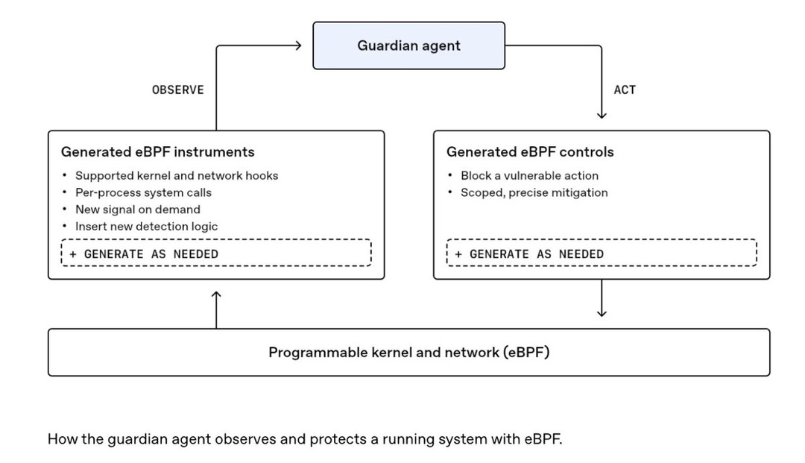

本期速览
02 Go+SQLite小机器扛3000并发
03 Together AI的Agent评测实践
05 Loop Transformer循环思考
06 Lean官方核查黎曼猜想证明成立
10 Linger开源本地个人Agent
11 Shirudo用eBPF实现不停机防御
01｜Meta首席AI官：AI缺行业知识
来源（X） · @dotey · 2026-11-23 14:47
AI 现在缺的不是智力，而是各行业的专门知识和实验条件；他同时反对把社会交给 AI，认为整个行业需要换一条路走。
AI 协助证明黎曼猜想这件事是个转折点，在大多数学过数学的人眼里，证明黎曼猜想是人类最高的智力成就；很多物理学家也会同意，跟它比起来，研制原子弹只算一道家庭作业题。
【文章的四个主要论点】
1. AIME 是第一个信号。
AIME（美国数学邀请赛）是美国高中生参加的数学竞赛。2024 年 12 月，OpenAI 的 o3 模型在 AIME 上几乎拿了满分。AIME 最难的题比顶尖工程师和企业管理者日常要解决的问题难得多。
模型现在已经够聪明，缺的是各行业的专门知识、背景信息和实际操作经验。过去两年补上这些之后，写代码这件事已经几乎被解决，模型的网络攻防能力变得很强，还能自己连续完成多步任务，成了通用助手。
2. 黎曼猜想比几乎所有领域的难题都难。
如果说 AIME 只是青少年的课外活动，黎曼猜想则可能是人类提出过的最难的智力问题。
模型要在各个领域远超人类，剩下的障碍已经不是智力，而是各领域的专门知识、配套的工程搭建和实验。AI 很可能成为几乎所有领域进步的最大贡献者。
3. AI 研究本身也会被自动化。
AI 研究比证明黎曼猜想容易得多，模型会聪明到能完成全部 AI 研究，也就是自己改进自己，而且在这件事上远超人类。
生物、武器、经济等领域的研究也会被大幅加速，速度可能快到人类看不懂、也监督不过来。
4. 不能接受把社会交给 AI。
人类很难控制一个完全不受约束、不断自我升级的 AI，也很难控制一个在每个领域都比人类聪明能干 1000 倍的超级智能。
AI 行业里一种普遍的想法：认为超级智能一定会来，唯一要解决的问题只是怎么安全地造出来。社会不应该接受这种移交，要造的技术应该让所有人拥有更多自主权和能力。
他相信这能做到，但可能需要整个行业采取和眼下默认路线明显不同的做法。文章没有具体说明这些做法是什么。
引用内容
Alexandr Wang @alexandr_wang
中文译文
原文
02｜Go+SQLite小机器扛3000并发
来源（X） · @realchendahuang · 2026-11-24 10:25
实测下来，原生 Go 加嵌入式 SQLite 编出来的单个执行文件只有 15 MB 左右，跑起来常驻内存也就 15 MB，不装任何外部中间件，一台 1C1G 小机器能直接扛住 3000 以上的并发长连接。
传统做法把数据库独立部署，哪怕装在同一台机器上，程序每次查数据都要打包发请求、等数据库算完再传回来，嫌慢又往上套一层 Redis，顺手把缓存一致性和一堆连接池麻烦全引进来了。
SQLite 直接嵌在 Go 程序里面，查库相当于直接读本地内存，单次查询几十微秒，连前端页面和数据库脚本都能一起打进这一个文件里，扔服务器上直接跑。
避开 SQLite 并发写锁死，关键是把读和写拆成两条独立连接，读的放开并发，写的单线排队不互相抢锁。配置、路由、限流、余额预扣这些高频操作直接放在 Go 进程内存里处理，不穿透硬盘。
需要落盘的账单和日志，放进内存队列每 15 毫秒攒成一批打包写入，把每秒几千上万条零碎写入压成几十次提交，硬盘压力很小。
担心单机硬盘坏了丢数据，后台挂一个轻量同步工具 Litestream，每 10 秒把增量变化传到 Cloudflare R2 对象存储，一个月不到 26 万次写入都在免费额度里。
就算机器坏了，新开一台 1C1G 服务器执行一行恢复命令，5 分钟就能原样拉起来。
如果你的业务已经做到多机多活、多个节点同时写主库，或者每秒要扛几千次必须立刻落盘的强同步写入，又或者单库数据攒到了几百 G、重度依赖全文检索和向量检索，最佳实践依然是老老实实上集群、独立 PostgreSQL 加 Redis。
不过大多数人的独立产品、SaaS、内部系统和 API 服务，从上线做到稳定赚钱，根本用不到那一步。
想直接用这套方案，把下面这段提示词丢给你的 AI，就能照着搭出来。
---
请帮我用原生 Go + 静态编译的 SQLite 设计并实现一个单机高并发 API 后端骨架，严格遵守以下架构要求：
- 零外部中间件、零 ORM，不依赖 Docker、PostgreSQL 和 Redis；用 embed.FS 把前端静态资源和 SQL 迁移脚本打包进单个二进制文件，提供 systemd 部署配置。
- 数据库层显式拆分 ReadDB 和 WriteDB 两个连接池：底层开启 PRAGMA journal_mode = WAL、PRAGMA synchronous = NORMAL、PRAGMA mmap_size = 134217728、PRAGMA cache_size = -32000。
- ReadDB 连接串强制加上 mode=ro&_query_only=on，设置 4 到 6 个连接用于并发读；WriteDB 锁定 SetMaxOpenConns(1) 并设置 _txlock=immediate，同时在 Go 层加一把 sync.Mutex 串行化写入，避免 SQLITE_BUSY。
- 热路径内存化：配置快照、路由状态、限流计数、用户余额或额度预扣等高频读写全部放进 Go 进程内存，使用 atomic 和按账号细粒度锁控制并发，不穿透磁盘。
- 异步组提交落盘：用容量 8192 的带缓冲 channel 接收扣费、日志等写入事件，后台单一写协程按每 15ms 或攒满 64 条合并成一个 SQLite 事务批量提交；实现优雅停机，退出前 Drain 排空队列防止丢数据。
- 容灾配置：生成配套的 Litestream 配置文件（每 10 秒增量同步至 Cloudflare R2）与一键 restore 恢复脚本；应用初始化数据库时必须显式设置 PRAGMA wal_autocheckpoint = 0，把 WAL checkpoint 控制权完全交给 Litestream，防止增量同步链断裂。
引用内容
陈大黄 @realchendahuang
03｜Together AI的Agent评测实践
来源（X） · @Xudong07452910 · 2026-11-24 08:31
他们把真实开发任务做成测试集，分别测试 Baseline、MCP、Skills 三种配置，跨模型重复运行，记录完整的工具调用和 API 响应，再用 LLM Judge 评分、回看失败轨迹。
有一个很典型的例子。Agent 把文档里的示例输出当成实时 GPU 库存，Skill 又把它引到没有价格的营销页，最后只能猜哪个 GPU 最便宜。团队把任务缩小、稳定复现后，补了两句话，明确告诉它去哪里查库存、去哪里查价格。
另一次，他们把 14 个 Skills 合成一个，首版通过率只有 75%，单次成本涨到两倍多。回看执行记录才发现，入口说明太长，还要求通读指南，实际加载的内容反而更多。缩短入口、按需读取资料，再修掉过时信息和示例代码后，72 次运行通过了 70 次，成本也回到原来的水平。
还有一点很实用，成功的任务也要复盘。Agent 绕了很多弯才完成，同样值得修。把这些问题变成能反复跑的测试，改完再测，这套流程很适合借鉴。
我非常喜欢这种工程思路。
Agent Eval 的价值远不止跑分。每次失败都能反过来帮助团队改进文档、Skill、API，甚至发现产品自身的问题。
https://www.together.ai/blog/how-we-do-agent-evals-at-together-ai
04｜DreamCoder多Agent窗格管理
来源（X） · @xiaomovps · 2026-11-23 17:57
刚看了 Mario 推荐的文章，是 Mastering Emacs 作者闭关 15 个月做出来的 AI Coding Harness
发现大多数的 AI Coding harness 都是千篇一律的，但是这个 AI harness 还是特别有意思的，最简单的 它 UI 界面就非常有特色
我自己翻了一下内容，发现有几个设计确实戳中痛点了：
1、不再挤在终端里，也不做普通聊天框
作者直接吐槽，现在很多工具要么塞在窄终端里，要么 GUI 千篇一律左边列表右边对话框，DreamCoder 在浏览器里做了一套智能平铺窗口管理器，多个窗格会自动分配大小，放不下就收进隐藏栏，鼠标放上去就能实时预览
2、右上角状态小地图，专治多 Agent 并行乱套
平时开一堆 Agent 切来切去很容易乱，它给每个工作区配了个实时小地图，哪个窗格在干活会轻微闪烁，卡在权限审批会明显提示，跑完了直接变绿，一眼就能看清全部进度
3、Emacs 风格的纯键盘操作
内置命令面板和快速跳转，用 Alt+x、Alt+m 加 WASD 就能在各个窗格和工作区之间来回切，对话、终端、事件图谱和目标面板都能并排摆开，不用一直抓着鼠标点来点去
4、底层硬指标不错，还能一键导入 Pi 配置
用的是自研工具循环，作者介绍缓存命中率能到 99%，支持连续跑好几天，也能走 Docker 做沙箱隔离，而且直接支持一键导入 Pi、OpenCode 和 Codex 的配置，对 Qwen 3.8 27B、DeepSeek 这类本地开源模型也很友好
顺便提醒一句，作者在评论区说目前还不支持直连 Claude Code Max 订阅，主要还是走 API 或者本地模型，想试的朋友注意一下
全平台支持 macOS、Windows、Linux 和 Docker，看下来确实挺有下一代 IDE 的味道，我后面找时间装一个，把自己的 Pi 配置导进去实际跑一遍，好用的话再分享给大家


引用内容
Mario Zechner @badlogicgames
中文译文
由 @mickeynp 推荐的阅读材料。Dreamcoder 里有很多好想法。
https://www.masteringemacs.org/article/announcing-dreamcoder
原文
recommended reading by @mickeynp. many nice ideas in dreamcoder.
https://www.masteringemacs.org/article/announcing-dreamcoder
05｜Loop Transformer循环思考
来源（X） · @oldfrog123 · 2026-11-23 21:31
放眼全球，真正在千亿甚至万亿参数规模上把 Loop Transformer 跑通落地的，全行业只有智谱 GLM 这一家。
这东西到底为什么影响很大？
过去几年大家卷大模型，用的是 Scaling Law 那一套。想让模型变聪明，就拼命堆参数、砸数据、卷算力。结果参数越堆越大，训练和推理成本已经高得离谱，想获得之前幅度的性能提升，需要付出的成本比以前高得多。
后来大家发现即使模型已经完成训练，参数不动也能变聪明，只要让模型在推理的时候增加点计算量，也就是所谓的思维链（CoT）。这就好比做一道难算的数学题，直接做可能错，但让它拿草稿纸一步步推导再检查，正确率立马就上来了。
但传统思维链全靠往外吐废话来思考，既慢又费 Token。而智谱这次跑通的 Loop Transformer（循环深度），相当于直接让模型在脑子里把同一层网络反复循环算好几遍！
不需要再把模型参数堆到几万亿去吃算力，用一套精简的架构反复循环思考，就能拥有超大模型的能力。以前大家都觉得谁算力强、参数大谁的优势就更大，现在智谱这个玩法，以后靠无脑堆算力卷参数的旧时代怕是要丢进垃圾桶了。
06｜Lean官方核查黎曼猜想证明成立
来源（X） · @dotey · 2026-11-24 12:16
用 Claude 证明黎曼猜想的 Anthropic 数学家 Levent Alpöge，在 X 上发了一篇《我做过的蠢事》，正面回应这几天的争议。
先说结论：证明本身没有问题。1700 万行代码的正确性已获官方核查通过，他认错的是“表述开玩笑”和“代码太乱”，并点出了这次证明真正值得思考的数学意义。
1. 辟谣与认错：他澄清了三件事
• “25万页文档”是个玩笑：他不想给黎曼猜想配一份 AI 糊出来的注水说明，又觉得自己写不出可读版本，索性拿 Lean 往夸张了凑字数自娱自乐，甚至在定理开头写“因为实数是全序的，所以不等于 1/2 时要么大于 1/2 要么小于 1/2”，本以为这么荒诞的废话一眼就能看出是反讽，结果被媒体和学界全盘当真。
他为此道歉，感叹终于明白陶哲轩为什么劝人“别在论文里开玩笑”。（他还顺带自嘲：之前做四维杨-米尔斯存在性攒了 6 万页 AI 草稿，结果审核委员会一句“要看 Lean”，让他觉得啃草稿纯属浪费时间。）
• 代码确实“满是垃圾”，但能编译：他承认 1700 万行 Lean 代码里有很多自己“瞎冲（yolo）”试出来的弯路和冗余，最终绝大部分可能都用不上，只是清理起来莫名困难，所有对代码质量的批评他全盘接受。
• 承认拖延前科：同行 Scott Armstrong 看穿了他，他学生时代就有定理拖了快十年才整理成文，这次他承诺会更负责地把证明精简出来。
2. 核心事实：代码再丑，证明依然成立
在形式化验证里，“不好读”和“对不对”是两件事：
1). Lean 官方（Lean FRO）与 Mathlib 已联合认证：定理陈述没有偷换概念，几十人独立编译结果完全一致，证明成立。
2) MIT 数学家 Andrew Sutherland 独立跑完核查：证明只用到了 Lean 的三条标准公理，没有作弊。
3. 最有启发的一点：为什么证出来了还不满意？
Alpöge 说，他在声明里漏掉了自己真正想强调的重点：
这种又长又杂的暴力论证本身只是“原材料”，真正的目的是帮数学家反推出“正确的定义”。
几十年前，Weil 和 Deligne 干净利落地证明了有限域曲线上的“简化版黎曼猜想”，靠的是一套成熟的几何工具；但在普通整数（数域）上，数学界至今找不到对应的核心结构（即他说的缺一个“H¹ 对象”）。
他的原话：“黎曼猜想本该很简单。任何真正的困难都说明，我们现在的数学框架还很蠢。”
4. 留给数学界的新局面
这次事件把数学推到了一个前所未有的分水岭：机器已经确认“它是对的”，但人类还不知道“它为什么对”。
陶哲轩初步浏览后指出，这份证明似乎动用了现代朗兰兹纲领和算术几何的全部武器；也有数学家认为：Lean 代码回答不了数学最关心的“为什么”。
按照克雷研究所百万美元奖金的规则，证明仍需在期刊正式发表满两年并获学界共识。
相关链接：
Alpöge 原推：https://x.com/__alpoge__/status/2124987173439209561
Lean 官方联合声明：https://leanprover-community.github.io/blog/posts/riemann-hypothesis/
MIT 核查页：https://math.mit.edu/~drew/grh/
Quanta 报道：https://www.quantamagazine.org/update/168181/
引用内容
levent @__alpoge__
中文译文
我做过的蠢事：
1. 250,000+ 页是个玩笑，大家！我觉得大数字特别好笑。我试图通过主定理中"实数全序"陈述的学究程度来表明这一点，但不幸的是人们当真了，而宣布之后的那几天我也不想在社交媒体上发言，虽然那些梗确实让我很开心。对不起！！！（同样地，关于我们的 YM4 存在性，我发现我们慢慢整理 60,000 页垃圾这件事极其好笑，不过评审委员会要求用 Lean 让我觉得自己浪费时间做那件蠢事很傻。但 60,000 页确实好笑。）陶哲轩建议不要在论文里开玩笑，也参见我硬塞进去的《谋杀绿脚趾》（Big Lebowski）引用，我现在理解为什么了……我不想让任何垃圾式的论述稿附在这个问题上，而且我觉得反正我也写不出可读的东西，所以我放弃了用 Lean 而转向 lengthmaxx。
2. 这个 Lean 里当然全是垃圾，但能编译，对这种垃圾的所有批评都是完全合理且被接受的，我应该把它清理干净的，但由于各种奇怪的原因这随机地困难。我的错……
3. @scottnarmstrong 抓到我了，确实即使在学生时代就有一些定理需要我花将近十年才写完，但希望这次我应该更负责任一些。（我确实在里面很多地方都是瞎写的，我猜大部分到最后都是不必要的，诚实地讲，更懒的做法是等一等，因为它会大大简化……）
4. 我忘了强调我认为重点是什么。这样的论证，很酷，但它们是在插值定义时的原始输入。我们没有数域上的 / 一个"H^1 对象"，而且对普通人来说，我们为了定义的目的而拼命争取这些论证这一点并不清楚（至少我的哲学是这样）。就像我知道我必须为一个极其简单的 Weil / Deligne 而奋斗一样，我觉得 Riemann 应该是容易的，任何真正的困难都只是表明我们目前的设定是愚蠢的。
原文
Stupid things I did:
1. 250,000+ pages was a joke guys!, I find big number extremely hilarious. I tried to make it clear by the level of pedantry of the reals total ordered statement in the main theorem, but people ran with it unfortunately and I didn’t feel like talking on social media in the days after the announcement, though I did have a good time with the memes. Sorry!!! (Similarly with our YM4 existence I found it extremely funny that we were slowly working through 60,000 pages of slop, though the committee asking for Lean made me feel dumb about wasting our time with that. But 60,000 funny.) Tao advises to not joke in papers, see also the Big Lebowski reference I shoehorned, I now understand why… I didn’t feel comfortable having any slop writeup attached to this problem, and I figured I can’t produce anything readable anyway, so I went off the Lean to lengthmaxx.
2. The Lean is full of garbage obviously, but compiles, but all criticism of such garbage is totally reasonable and accepted, I should have cleaned it up but it was randomly difficult to for various strange reasons. Mea culpa…
3. @scottnarmstrong clocked me, indeed even as a student there were theorems that took me the better part of a decade to write up, but with this one I should hopefully be more responsible. (I really was yoloing a lot in there, I bet most is unnecessary in the end, admittedly the lazy thing to do would be to wait because it’ll simplify massively…)
4. I forgot to emphasize what I think is the point. Arguments like these, cool, but they are the raw inputs when interpolating definitions. We don’t have the / an “H^1 object” over number fields, and probably for a layperson the fact that we fight hard for these arguments for the purpose of definitions is not clear a priori (that’s at least my philosophy). Just like I knew I must fight for an utterly simple Weil / Deligne, I feel Riemann should be easy, and any real difficulty is an indication our setup is just dumb at the moment.
07｜裸模型三类登顶编程Skill实测榜
来源（X） · @Tynric_carter · 2026-11-23 16:28
46 个候选，八个类目全部同题实测。这一篇多了个狠角色：不装任何 skill 的裸模型，每一类都进来同题跑，成绩直接排进榜里。
结果它三类进了顶级，写文档那一类直接登顶。很多 skill，打不过不装 skill。不服评论区见。 https://x.com/i/article/2124778551631298560
08｜T3 Code为CLI加统一UI壳
来源（X） · @antiAIvo · 2026-11-23 17:46
就去了解下它到底是个什么东西？
拆开看原理其实很直接：它自己既没接大模型 API，也没重写 Agent
本质上就是给 Claude Code、Codex 这些官方 CLI
套了一层统一的 UI 壳，顺手在下面加了一套任务编排管理
所以用它有个硬前提：你电脑上必须先装好各家的本地 CLI
它底层是直接把本地 CLI 当子进程拉起来调的
像 Claude、Cursor 那种官方桌面客户端它根本调不了
不过看下来，它主打的“多模型混用 / 中途切模型”
说一下我的一点反向看法🤔
举一个真实场景例子：
你使用T3，claude和GPT切换用，会出现什么问题呢？
Claude 和 OpenAI 两边底层的会话压根对不起来
切模型本质上就是新开个窗口
把本地存的记录打包塞过去硬交接，真要来回切着聊
不仅 Prompt Cache 直接失效，对话也容易搞乱
普通人哪会这么干，而且各大官方客户端已经够顺手了
真没必要多套这一层，除非是真有需求的开发人员吧
我还没有用，由于我对后端很熟
所以只是看了官网的介绍，就大概能猜出它的实现
简单写一点感想，后面可能会用下试试，不过有点懒得折腾
主要目前我这几个agent桌面端就能满足我的需求了
而且，我几乎不用CLI，觉得有点反常
就像有IDE了，还在用命令行写代码.........
https://t3.codes/
09｜个人Ontology七步构建认知体系
来源（X） · @SeanchenZ · 2026-11-24 10:00
最近研究企业 Ontology 和 AI Agent 架构时，我发现这套思维方式同样适用于个人知识管理、学习和决策。
但首先需要区分 Ontology 与传统知识库。
知识库解决的是「我知道什么」，Ontology 解决的是「我如何理解这个世界，以及如何利用这些知识解决问题」。
传统知识库以文档、标签、主题和信息检索为中心。
Ontology 则以对象、属性、关系、状态、规则和行为为中心。
例如：
知识库记录我学习过 Python、PLC、AI Agent，参与过哪些工业项目。
Ontology 则进一步定义这些技能之间的关系、分别能够解决什么问题、在哪些项目中得到过验证、适用于什么场景，以及如何组合这些能力去实现新的目标。
知识库提供信息，Ontology 为信息赋予明确的业务语义和可操作性。
两者并不互相替代。知识库可以成为 Ontology 的信息来源，而 Ontology 则为 Agent 提供理解和使用这些信息的领域模型。
我尝试将个人 Ontology 的设计拆解为七个步骤。
01｜定义目标（Objective）
明确自己长期想解决什么问题、获得什么能力、实现什么目标。
目标决定信息采集的边界。
02｜定义对象（Object）
识别自己现实世界中的核心对象：人、组织、项目、技能、资源、机会、问题、任务。
每个对象都有自己的属性、状态和生命周期。
03｜建立关系（Relationship）
某项技能能够解决什么问题？
某个项目能够验证什么能力？
某项资源能够帮助实现什么目标？
不只是建立笔记之间的双向链接，而是定义具有明确语义的关系，例如依赖、归属、因果、适用和验证关系。
04｜观察现实（Observation）
将每天接触的信息按照事实、事件、状态、行为、决策、规则、证据、结果进行采集。
尤其要区分客观事实、个人判断和未经验证的假设。
05｜提炼规则（Rule）
从真实经历中提取决策逻辑、适用条件、失败原因和可复用的方法。
一次成功不代表方法永远正确。规则必须具有适用边界。
06｜独立验证（Verifier）
通过实验、项目、市场反馈和实际数据验证自己的判断。
验证失败就修改规则，证据不足就保留为假设。
07｜持续演化（Evolution）
将经过验证的知识沉淀为可复用的规则、Skills、案例和决策模型，同时淘汰过期知识，修正错误认知。
举一个我自己的真实例子。
以前在矿山从事设备管理工作时，我曾核对近百条设备台账，涉及设备型号、数量、技术参数、归属以及设计资料。
核对过程中发现，设备台账与设计资料之间存在差异。
当时我还尝试使用 FastGPT 和 RAG 搭建设备知识检索原型，并进行了小范围试用。
如果按照传统知识库的方式，我会保存设备资料、项目记录、技术文档，然后通过 RAG 进行检索。
但如果用 Ontology 的方式重新组织这段经历：
Objective：提高设备资料检索与核对效率。
Object：设备、台账、设计资料、运维记录。
Relationship：设备与型号、参数、归属及历史记录之间的关联。
Observation：不同数据来源存在不一致。
Rule：资料比对结果不能替代现场确认。
Action：检索资料、比对参数、标记差异、发起复核。
Verifier：原始资料核对、现场复核。
Evolution：将核对依据、处理方法和适用条件沉淀为可复用知识。
这里的区别非常明显。
知识库可以告诉 Agent 某台设备的技术参数。
Ontology 可以进一步帮助 Agent 理解这个参数属于哪个设备、来自哪个版本的设计资料、是否与台账冲突、应该采取什么操作，以及如何验证最终结果。
前者侧重信息检索，后者为推理、决策和执行提供结构化基础。
当然，这是我现在对过去经历的重新建模，并不是当时已经实现了一套完整的 Ontology 系统。
最终，我希望建立的个人智能体系是：
Knowledge Base：存储信息与原始知识。
Ontology：定义对象、关系、规则与领域语义。
Agent：基于领域模型进行推理和执行。
Verifier：通过独立证据检验结果。
经过验证的新知识再反哺 Ontology，持续修正自己的认知体系。
我希望未来自己的 Personal Agent 不仅知道我读过什么、说过什么，还能理解我解决过什么问题、具备什么能力、哪些判断经过了现实检验。
AI时代，我不想再单纯积累信息了。
我更想积累一套自己和 Agent 都能够使用、能够被现实检验、能够持续演化的认知体系。
而不是一个塞满了几千篇收藏文章的 Notion。
10｜Linger开源本地个人Agent
来源（X） · @shao__meng · 2026-11-23 08:07
DeepSeek 最早核心成员、DeepSeek-VL 项目负责人张博 @zhangboknight 创办 Simplex AI，推出个人 Agent Linger 并公开源码。Linger 的目标，是让助手使用个人电脑上的文件、浏览器和应用，持续整理信息、跟进任务，而不只是等待下一句指令。
开源地址：
https://github.com/simplexai-labs/linger
# 在现有运行框架之外，补齐个人助手能力
Linger 建立在 Claude Code、Codex 或 Pi 之上，增加记忆、任务、权限与协作能力。主助手 Another Me 会回看近期对话、检查已连接的邮件和日历，从会议与笔记中提取待办，再决定立即提醒、稍后跟进，还是保持沉默。
记忆分为两层：一份可供多个助手检索的个人知识库，将邮件、聊天和会议整理成带出处的页面；各助手另有自己的工作记忆。夜间整理还会复盘用户对主动消息的反应，更新后续行为规则。
值得关注的是，它尝试把“知道用户的事”和“判断什么时候开口”接起来。实际是否有用，还要看记忆是否准确、提醒能否逐渐符合个人习惯。
# 能在个人电脑运行，不代表数据一定留在本机
本地推理由团队的 MoE 引擎 PolyStrata 提供：常用专家保留在显存，其余放在内存或固态硬盘。团队称，12GB 显卡搭配 64GB 内存，可以运行 1250 亿参数的 Qwen3.8-Flash-Next。
但“装得下”和“响应快”需要分开看。官方基准部分档位是在更大显卡上限制显存模拟得出，真实机器可能更慢；该量化模型的首个 token 可能需要等待约三分钟，安装器也未必默认选择最大模型。
Linger 同时支持云端模型和现有订阅。应用连接、会议转写、实时语音可能使用外部服务；夜间记忆整理若调用云端 Claude Code 或 Codex，对话也会离开本机。因此，隐私边界取决于具体配置，不能仅凭“本地部署”判断。
# 操作权限与许可证，都需要看清
Linger 以当前用户身份访问文件、命令行和已登录应用，没有沙箱隔离。已连接应用的读取可以直接发生，向外写入需要确认卡；桌面和命令行操作另有规则检查，可选模型审核默认关闭。确认机制与沙箱隔离提供的是不同保护。
项目支持苹果芯片 Mac、Windows x64 和 Linux x64，但各平台能力有差异，桌面安装包仍在等待苹果开发者证书。
源码采用基于 Apache 2.0 的附加条款许可证：限制未经授权向组织外提供托管服务，并要求保留前端标识，不能简单当作标准 Apache 2.0 项目使用。
引用内容
Tony Zhang @zhangboknight
中文译文
在 1960 年代，计算是集中式的，直到 PC 把权力交到每个人手中。现在 AI 在数据中心中训练，再按 token 逐个租回给你。
今天我们开源 Linger（@HeyLingerAl），你的个人智能体，运行在你自己的电脑上。
我们相信智能应该是分布式的。你的上下文、你的数据，以及驱动它们的智能，应该完全由你拥有。
Github: https://github.com/simplexai-labs/linger 主页: http://heylinger.com
原文
In the 1960s, computing was centralized until the PC put power into everyone's hands. Now Al is trained in datacenters and rented back to you token by token.
Today we open source Linger (@HeyLingerAl), your personal agent living on your own computer.
We believe intelligence should be distributed. Your context, your data, and the intelligence that powers them should be owned entirely by you.
Github: https://github.com/simplexai-labs/linger Homepage: http://heylinger.com
11｜Shirudo用eBPF实现不停机防御
来源（X） · @OpenAI · 2026-11-24 05:37
中文译文
我们正在推出 Shirudo，一个开源的 Linux 运行时，允许智能体在不停机的情况下防御系统。它让智能体编写动态 eBPF 控制来保护系统免受漏洞利用，给防御者更多时间测试和推出补丁。由 @cisco 与 OpenAI 共同打造。
Shirudo 是迈向自我防御基础设施的第一步，能够在保持服务运行的同时适应新的威胁。我们的目标是让防御者与 AI 智能体合作，找到受影响的系统，测试和共享防护盾，并在不中断工作负载的情况下部署它们。
https://openai.com/index/introducing-shirudo/
原文
We’re introducing Shirudo, an open-source Linux runtime allowing agents to defend systems without downtime. It lets agents write dynamic eBPF controls to shield systems from exploits, giving defenders more time to test and roll out patches. Built by @cisco together with OpenAI.
Shirudo is a first step toward self-defending infrastructure that can adapt to new threats while keeping services running. Our goal is for defenders to work with AI agents to find affected systems, test and share shields, and deploy them without disrupting workloads.
https://openai.com/index/introducing-shirudo/
